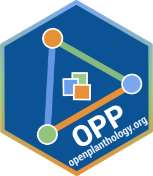

 This repository retrieves the data and code for our presentation at the 12th International Epidemiology Workshop:
Sparks, A.H. and Del Ponte, E. M. (2019). What’s so Open About Plant Pathology?. Australian National University Open Science Day. 2019-02-25
The slides of the presentation were prepared in Google Slides and can be found here.
The code used to generate graphs that were presented at ANU can be found in the articles.
The data are from https://openplantpathology.github.io/Reproducibility_in_Plant_Pathology/.
Sparks, A.H., Del Ponte, E.M., Everhart, S., Foster, Z.S.L., and Grünwald, N. (2018). Compendium of R code and data for ‘Status and Best Practices for Reproducible Research In Plant Pathology’. Accessed 02 Jun 2018. Online at https://doi.org/10.5281/zenodo.1250665
How to use
Install supporting package, hrbrthemes
Install hrbrthemes, which provides the theme for the ggplot2 graphs and loads the fonts.
Install the package and load it. Upon loading it follow the directions for installing and loading Roboto Condensed fonts.
Take note of these instructions and execute them and then install the font, Roboto Condensed on your computer as directed.
Instructions for installing Roboto Condensed on your system
Windows instructions
See https://support.microsoft.com/en-us/help/314960/how-to-install-or-remove-a-font-in-windows
Install OPP.at.ANU
Now install the package using devtools and then use browseVignettes to see the HTML version, the raw Rmd file and only the R code of the vignette locally.
How to cite
Please cite this compendium as:
EM Del Ponte, AH Sparks, (2019). Compendium of R code and data for ‘Open ideas, data and code sharing: epidemiologists should be in front!’. Accessed 22 Feb 2019. Online at https://doi.org/10.5281/zenodo.1286101
How to download or install
You can download the compendium as a zip from from this URL: https://github.com/openplantpathology/OPP.at.ANU/archive/master.zip
Or you can install this compendium as an R package, OPP.at.IEW12, from GitHub with:
Licenses
Text and figures : CC-BY-4.0
Code : See the DESCRIPTION file
Data : CC-0 attribution requested in reuse
Contributions
We welcome contributions from everyone. Before you get started, please see our contributor guidelines. Please note that this project is released with a Contributor Code of Conduct. By participating in this project you agree to abide by its terms.